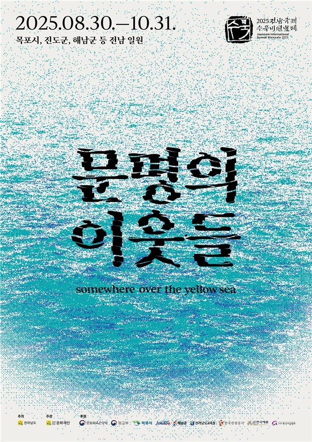

|  | | 2025 전남국제수묵비엔날레
- 주 제 「문명의 이웃들」 - somewhere over the yellow sea
- 기 간 2025. 8. 30.(토) ~ 10. 31.(금)
- 개 막 식 2025.8.29.(금) 17:00~18:30 / 목포 문화예술회관
- 장 소 목포시, 진도군, 해남군 등 전남 일원
- (비엔날레전시) 목포·
진도·해남 6개소 / (특별전시) 도립미술관 / (기념전) 7개시·군 11개소
- 주요 내용 수묵전시, 학술심포지엄, 교육·참여프로그램 등
- 주관 전라남도 문화재단(전남국제수묵비엔날레 사무국)
|